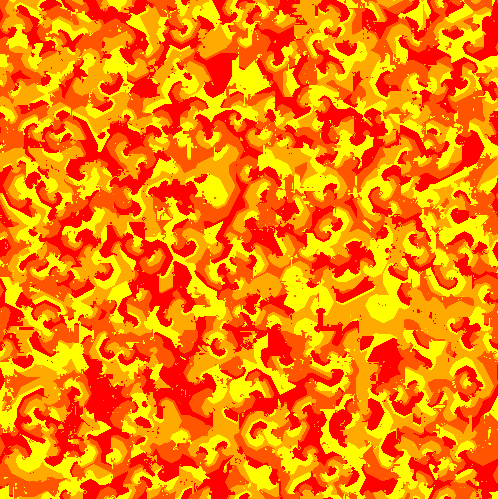

|
Automate cyclique de D. Griffeath Il s'agit d'un automate cellulaire auto-reproducteur. Il est constitué d'une grille régulière de « cellules » contenant chacune un « état » choisi parmi un ensemble fini (4 dans ce cas : jaune, orange clair, orange foncé, rouge) : L'automate évolue au cours du temps : L'état d'une cellule au temps t+1 dépend de son état au temps t et de l'état de ses voisines. À chaque pas de temps, une règle (appelée Fonction de transition) est appliquée simultanément à toutes les cellules de la grille, produisant une nouvelle « génération » de cellules dépendant entièrement de la génération précédente. La fonction de transition est simple : une cellule passe d'un état (i) au suivant (i+1) dans le cycle d'états dès que i+1 est présent dans au moins 3 cellules voisines :  À partir d'un état initial aléatoire de la grille, nous obtenons ce type de résultats complexes :
Etat de la grille au temps 2500 :
|
|